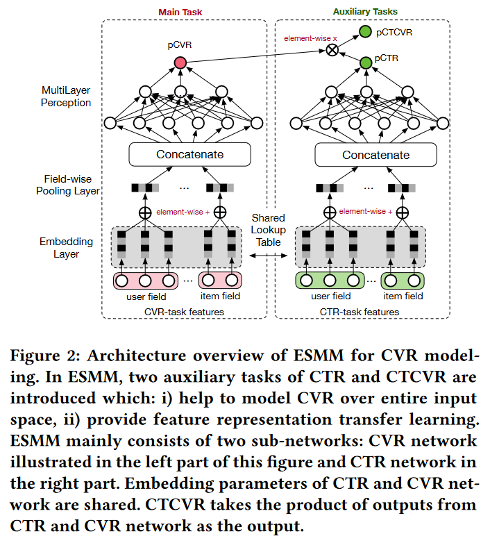

cvr预估
1. 引言¶
转化率 (CVR) 是推荐系统中平衡用户点击偏好和购买偏好的重要因素。本文专注于点击后CVR估计的任务。为了简化讨论，我们以电子商务网站推荐系统中的CVR建模为例。
给定推荐的商品，用户可能会点击感兴趣的商品并进一步购买其中的一些。换句话说，用户行为遵循曝光→点击→转化的顺序模式。因此，CVR建模指的是估计点击后转化率的任务，即 \(p_{cvr}=p(conversion|click,impression)\)。
点击率CTR预测: \(p_{ctr}=p(click|impression)\)
1.1 关键挑战¶
1.1.1 样本选择偏差¶
转化是在点击之后才“有可能”发生的动作，传统CVR模型通常以点击数据为训练集，其中点击未转化为负例，点击并转化为正例。但是训练好的模型实际使用时，则是对整个空间的样本进行预估，而非只对点击样本进行预估。即训练数据与实际要预测的数据来自不同分布，这个偏差对模型的泛化能力构成了很大挑战，导致模型上线后，线上业务效果往往一般。
样本选择偏差 (Sample Selection Bias, SSB)，通常指在数据分析中，由于样本选择的非随机性导致样本不能代表总体，从而使得统计推断产生偏差的现象
- 通用缓解策略
- 随机抽样：确保样本是从总体中随机选取的，以减少偏差。
- 加权方法：如果已知样本选择的概率，可以通过加权来调整样本以反映总体特征。
- 匹配方法：使用倾向得分匹配（Propensity Score Matching）等方法，为每个样本找到一个或多个类似的对照样本。
1.1.2 数据稀疏性¶
CVR预估任务的使用的训练数据（即点击样本）远小于CTR预估训练使用的曝光样本。仅使用数量较小的样本进行训练，会导致深度模型拟合困难。
- 通用缓解策略
- 从曝光集中对unclicked样本抽样做负例
- 对转化样本过采样
1.1.3 延迟反馈¶
2. ESMM¶
论文: Entire Space Multi-Task Model: An Effective Approach for Estimating Post-Click Conversion Rate
地址: https://arxiv.org/pdf/1804.07931
发布：SIGIR 2018
前置知识
点击转化CTCVR预测: \(p_{ctcvr}=p(conversion|impression)\)
\(p_{ctcvr}(y=1,z=1|x)=p_{ctr}(y=1|x)*p_{cvr}(z=1|y=1,x)\)
ESMM模型是一种多任务学习模型，通过学习CTR、CTCVR两个预估任务，根据上式可以隐式地学习到CVR任务，其模型框架如下：
- Embedding层共享参数，MLP层各自任务独享参数
- ESMM通过共享CTR网络和CVR网络的嵌入参数，利用CTR任务中更丰富的样本来帮助CVR网络学习特征表示，这有助于缓解数据稀疏（DS）问题
- 隐式学习 \(p_{cvr}\) ，没有对其构建监督信号
- 损失函数：\(L(\theta_{c\upsilon r},\theta_{ctr}) =\sum_{i=1}^{N}l\left(y_{i},f(x_{i};\theta_{ctr})\right) +\sum_{i=1}^{N}l\left(y_{i}\&z_{i},f(x_{i};\theta_{ctr})\times f(x_{i};\theta_{cvr})\right)\)
- 整个样本空间上建模，不是仅在点击的样本上训练模型

3. ESCM2¶
题目：ESCM^2 : Entire Space Counterfactual Multi-Task Model for Post-Click Conversion Rate Estimation
地址：https://arxiv.org/pdf/2204.05125
发表：SIGIR 2022